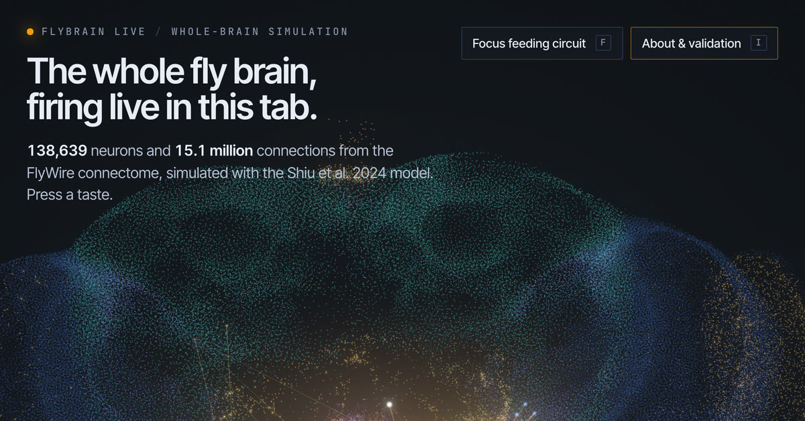

FLYBRAIN LIVE/WHOLE-BRAIN SIMULATION
138,639 neurons and 15.1 million connections from the FlyWire connectome, simulated with the Shiu et al. 2024 model. Press a taste. Lite graph (86 % of synapses). Use the full 30.7 MB graph
STIMULUS · taste neurons (GRNs)
FLYBRAIN LIVE
Placing 138,639 neurons…
connectome 30.7 MB, decoded locally
FLYBRAIN LIVE

Open this page in Chrome, Edge, Firefox or Safari 16.4 or newer (use “Open in browser” from the app menu) to run it. It simulates all 138,639 neurons of the fruit-fly brain with the Shiu et al. 2024 model, checked against the authors’ Brian2 code.